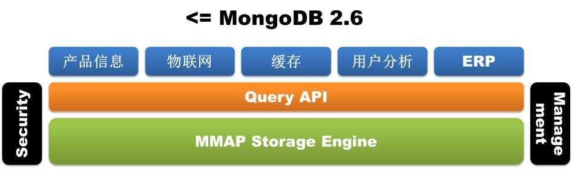
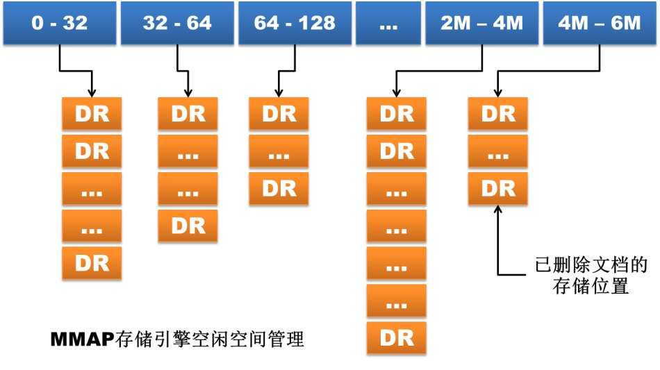

MongoDB is a non-relational database (NoSQL) that is very popular in the IT industry. Its flexible data storage method is highly favored by current IT practitioners.
Runoob has also kept pace with it and updated the tutorial content to version 3.0. The examples in the tutorial have been tested and passed in version 3.0.
The following content covers the new features of version 3.0:
Pluggable Storage Engine API
MongoDB 3.0 introduced the pluggable storage engine API, making it convenient for third-party storage engine vendors to join MongoDB. This change undoubtedly references MySQL's design philosophy. Currently, in addition to the early MMAP storage engine, both WiredTiger and RocksDB have completed support for MongoDB. The former, after being acquired by MongoDB Inc., was directly integrated into MongoDB 3.0. The introduction of the pluggable storage engine API provides infinite possibilities for MongoDB to enrich its arsenal to handle more different types of business. In-memory storage engines, transactional storage engines, and even Hadoop may all be integrated in the future.


WiredTiger Storage Engine
If the pluggable storage engine API built an arsenal for MongoDB 3.0, then WiredTiger is definitely the first and most important bombshell in that arsenal. Because of the inherent shortcomings of the MMAP storage engine (wasting disk space and memory space and being difficult to clean up, and database-level locking), MongoDB brought great pain to database administrators. Some people even began to turn to TokuMX, although the latter is still not very stable. MongoDB, aware of this problem, made a rich-and-willful decision: it directly acquired the storage engine vendor WiredTiger and integrated the WiredTiger storage engine into version 3.0 (only available in 64-bit versions). So what expected features does this storage engine, now in the spotlight, actually have?
1. Document-level concurrency control
WiredTiger implements document-level concurrency control, i.e., document-level locking, through MVCC. This allows multiple client requests to simultaneously update multiple documents in a collection without having to queue up waiting for a database-level write lock. While improving database read and write performance, it also greatly enhances the system's concurrent processing capability. The effect of this can be directly seen from the monitoring tool mongostat. The monitoring metrics in the old version had the lockeddb item (an excessively high value for this metric is a major pain point for MongoDB users), but the new version of mongostat no longer shows it.

MongoDB version 2.4.12
$/home/mongodb/mongodb-linux-x86_64-2.4.12/bin/mongostat –port55060 insert query update delete getmore command flushes mapped vsize resfaults locked db idxmiss % qr|qw ar|aw netIn netOut conntime *0 *0 *0 *0 0 1|0 0 18g 18.3g 16.1g 0 ycsb:0.0% 0 0|00|0 62b 2k 1 13:04:01 *0 *0 *0 *0 0 1|0 0 18g 18.3g 16.1g 0 ycsb:0.0% 0 0|00|0 62b 2k 1 13:04:02 *0 *0 *0 *0 0 1|0 0 18g 18.3g 16.1g 0 ycsb:0.0% 0 0|00|0 62b 2k 1 13:04:03
MongoDB version 3.0 rc8
$/home/mongodb/mongodb-linux-x86_64-3.0.0-rc8/bin/mongostat –port55050 insert query update delete getmore command % dirty % used flushesvsize res qr|qw ar|aw netIn netOut conntime *0 *0 *0 *0 0 1|0 0.0 42.2 0 30.6G 30.4G 0|0 0|0 79b 16k 113:02:38 *0 *0 *0 *0 0 1|0 0.0 42.2 0 30.6G 30.4G 0|0 0|0 79b 16k 113:02:39 *0 *0 *0 *0 0 1|0 0.0 42.2 0 30.6G 30.4G 0|0 0|0 79b 16k 113:02:40
2. Disk data compression
WiredTiger supports Block compression and prefix compression for all collections and indexes (if journal is enabled for the database, journal files are compressed as well). The supported compression options include: no compression, Snappy compression, and Zlib compression. This brings another boon to MongoDB users, because many MongoDB databases had to be expanded because the MMAP storage engine consumed too much disk space. Among them, Snappy compression is the default compression method for the database, and users can choose an appropriate compression method according to business needs. Theoretically, Snappy compression is fast and has an acceptable compression ratio, while Zlib compression has a high compression ratio but consumes more CPU and is slightly slower. Of course, as long as compression is used, MongoDB will definitely occupy more CPU usage, but considering that MongoDB itself does not consume much CPU, enabling compression is completely worthwhile.


In addition, WiredTiger has also greatly improved its storage method. The old version of MongoDB allocates files at the database level. All collections and indexes in a database are mixed and stored in the database files, so even if a collection or index is deleted, the occupied disk space is difficult to be automatically reclaimed in a timely manner. WiredTiger allocates files at the collection and index level. All collections and indexes in the database are stored in separate files. After a collection or index is deleted, the corresponding storage file is deleted immediately. Of course, because of the different storage methods, databases from lower versions cannot be directly upgraded to the WiredTiger storage engine. This can only be achieved by exporting and importing data.
MongoDB version 2.4.12
[mongodb@mongo-data-emergency-001.m6.momo.com mongodb_2_4_12]$ll drwxrwxr-x 3 mongodb mongodb 4096 2月 25 19:03local -rwxrwxr-x 1 mongodb mongodb 6 2月 25 19:04mongod.lock drwxrwxr-x 2 mongodb mongodb 4096 2月 27 18:30_tmp drwxrwxr-x 3 mongodb mongodb 4096 2月 27 18:39ycsb [mongodb@mongo-data-emergency-001.m6.momo.com mongodb_2_4_12]$ llycsb/ drwxrwxr-x 2 mongodb mongodb 4096 2月 27 18:39_tmp -rw——- 1 mongodb mongodb 67108864 2月 27 18:57ycsb.0 -rw——- 1 mongodb mongodb 134217728 2月 27 18:57ycsb.1 -rw——- 1 mongodb mongodb 2146435072 2月 27 18:57ycsb.10 -rw——- 1 mongodb mongodb 2146435072 2月 27 18:57ycsb.11 -rw——- 1 mongodb mongodb 2146435072 2月 27 18:57ycsb.12 -rw——- 1 mongodb mongodb 2146435072 2月 27 18:39ycsb.13 -rw——- 1 mongodb mongodb 268435456 2月 27 18:57ycsb.2 -rw——- 1 mongodb mongodb 536870912 2月 27 18:57ycsb.3 -rw——- 1 mongodb mongodb 1073741824 2月 27 18:57ycsb.4 -rw——- 1 mongodb mongodb 2146435072 2月 27 18:57ycsb.5 -rw——- 1 mongodb mongodb 2146435072 2月 27 18:57ycsb.6 -rw——- 1 mongodb mongodb 2146435072 2月 27 18:57ycsb.7 -rw——- 1 mongodb mongodb 2146435072 2月 27 18:57ycsb.8 -rw——- 1 mongodb mongodb 2146435072 2月 27 18:57ycsb.9 -rw——- 1 mongodb mongodb 16777216 2月 27 18:40ycsb.ns
[mongodb@mongo-data-emergency-001.m6.momo.com mongodb_3_0_0]$ll drwxrwxr-x 2 mongodb mongodb 4096 2月 28 18:32local -rw-rw-r– 1 mongodb mongodb 36864 3月 21 13:41_mdb_catalog.wt -rwxrwxr-x 1 mongodb mongodb 6 2月 28 18:32mongod.lock -rw-rw-r– 1 mongodb mongodb 36864 3月 21 13:42sizeStorer.wt -rw-rw-r– 1 mongodb mongodb 95 2月 28 18:32storage.bson -rw-rw-r– 1 mongodb mongodb 49 2月 28 18:32WiredTiger -rw-rw-r– 1 mongodb mongodb 433 2月 28 18:32WiredTiger.basecfg -rw-rw-r– 1 mongodb mongodb 21 2月 28 18:32WiredTiger.lock -rw-rw-r– 1 mongodb mongodb 921 3月 21 13:41WiredTiger.turtle -rw-rw-r– 1 mongodb mongodb 53248 3月 21 13:41WiredTiger.wt drwxrwxr-x 2 mongodb mongodb 4096 3月 21 13:41ycsb [mongodb@mongo-data-emergency-001.m6.momo.com mongodb_3_0_0]$ llycsb/ -rw-rw-r– 1 mongodb mongodb 19314257920 2月 2819:16 collection-4–1318477584648278106.wt -rw-rw-r– 1 mongodb mongodb 602112 3月 2113:40 collection-6–1318477584648278106.wt -rw-rw-r– 1 mongodb mongodb 262598656 2月 2818:53 index-5–1318477584648278106.wt -rw-rw-r– 1 mongodb mongodb 827392 3月 2113:40 index-7–1318477584648278106.wt -rw-rw-r– 1 mongodb mongodb 1085440 3月 2113:41 index-8–1318477584648278106.wt
3. Configurable memory usage cap
WiredTiger supports memory usage capacity configuration. Users can control the maximum memory that MongoDB can use through the storage.wiredTiger.engineConfig.cacheSizeGB parameter, whose default value is half of the physical memory size. This also brings another boon to MongoDB users. The MMAP storage engine is notoriously memory-hungry; as long as the data volume is large enough, it simply uses as much memory as there is.
MMAPv1 Storage Engine Improvements
In addition to introducing WiredTiger, MongoDB 3.0 also made certain improvements to the original MMAP storage engine. This storage engine is still the default storage engine in version 3.0. Unfortunately, the improved MMAP storage engine still allocates files at the database level, and all collections and indexes in the database are still mixed and stored in the database files, so the problem that disk space cannot be automatically reclaimed in a timely manner remains.
1. Lock granularity upgraded from database-level locking to collection-level locking
This can, to a certain extent, also improve the database's concurrent processing capability.
2. Document space allocation method changed
In the MMAP storage engine, documents are stored in the order they are written. If a document becomes longer after an update and there is not enough space after its original storage location to hold the increased data, the document must be moved to another location in the file. This document movement caused by updates can seriously degrade write performance, because once a document is moved, all indexes in the collection must be synchronously updated to reflect the document's new storage location.
To reduce the occurrence of such situations, the MMAP storage engine provides two document space allocation methods: adaptive allocation based on paddingFactor, and pre-allocation based on usePowerOf2Sizes. The former is the default method. The first method calculates the average growth length of document updates based on the update history of documents in each collection, and then pads some space when new documents are inserted or old documents are moved. For example, if the current collection's paddingFactor value is 1.5, then when a document of 200 bytes is inserted, 100 bytes of space will automatically be padded after the document. The second method ignores the update history and directly allocates storage space of a power-of-2 size to the document. For example, when a document of the same size of 200 bytes is inserted, it directly allocates 256 bytes of space.
MMAPv1 in MongoDB 3.0 abandoned the paddingFactor-based adaptive allocation method. This is because, although this method looks very intelligent, documents in a collection vary in size, so the padded space sizes also vary. If there are many update operations on a collection, the free space caused by record movement becomes difficult to reuse due to different sizes. Currently, the pre-allocation method based on usePowerOf2Sizes has become the default document space allocation method. Because the sizes of allocated and reclaimed space are always powers of 2 (when the size exceeds 2MB, it grows in multiples of 2MB), this method is easier to maintain and utilize. If a collection only has insert or in-place update operations, users can disable space pre-allocation by setting the noPadding flag for that collection.

Replica Set Improvements
1. Increase in replica set members
In MongoDB 3.0, the maximum number of replica set members has increased from 12 to 50, but the maximum number of voting members remains 7. Accordingly, the w:"majority" option in getLastError only represents the majority of the voting members.
2. Change in Primary node StepDown handling
In a replica set, the replSetStepDown command can cause the current Primary node to step down and trigger the re-election of a new Primary node. MongoDB 3.0 makes the following changes to the StepDown handling process: 1) Before the Primary steps down, it will first interrupt certain long-running user operations such as index creation, write operations, MapReduce tasks, etc.; 2) To prevent data rollback, the Primary node will wait for an electable Secondary node to catch up to the latest data before stepping down, whereas in the old version, the Primary node would step down as long as a Secondary node's data was synchronized to within 10 seconds; 3) In addition, the replSetStepDown command has added a new parameter, secondaryCatchUpPeriodSecs, with which users can specify that the Primary node waits until a Secondary node's data is synchronized to within the number of seconds specified by the parameter, and then steps down.
Sharded Cluster Improvements
1. New utility function sh.removeTagRange()
In older versions, there was only sh.addTagRange(). To delete a tagRange, you had to manually delete it from the config.tags collection.
2. More predictable Read Preference handling
In the new version, mongos instances no longer pin connections to replica set members when performing read operations. Instead, they re-evaluate the ReadPreference for each read operation. In this way, when the Read Preference is changed, its behavior is easier to predict.
3. Provide writeConcern setting for chunk migration
The new version provides the writeConcern parameter for the balancer for the two commands moveChunk and cleanupOrphaned that involve chunk migration.
4. Add balancer status display
In the new version, you can see balancer status information through sh.status().
Other Changes
1. Optimize the explain function
The new version's explain function supports query plan display for operations such as count, find, group, aggregate, update, remove, and more, with more comprehensive and more detailed results.
2. Rewrite MongoDB tools
In the new version, all built-in MongoDB tools are rewritten in Go. In particular, a parallel mechanism has been added to mongodump and mongorestore, which greatly speeds up data export and import.
3. Log output control
In the new version, logs are divided into different modules, including ACCESS, COMMAND, CONTROL, GEO, INDEX, NETWORK, QUERY, REPL, SHARDING, STORAGE, JOURNAL, and WRITE. Users can dynamically adjust the log level of each module, which is undoubtedly more conducive to system problem diagnosis.
4. Index build optimization
During background index building, operations to drop databases, tables, or indexes cannot be performed, and the background index building process will not be automatically interrupted for this reason. In addition, using the createIndexes command can build multiple indexes at the same time while scanning the data only once, improving index building efficiency.
Summary
The above only lists some of the major features and changes in MongoDB 3.0. If you want to learn more, you can check the MongoDB 3.0 Release Notes. Overall, MongoDB 3.0 provides many surprising new features, which also makes people more optimistic about its future development.
Tutorial URL
Tutorial address:http://www.runoob.com/mongodb/mongodb-tutorial.html
Click me to share notes
<p style="font-size:14px;">The note needs to be an extension of the content of this article!</p><br> <p style="font-size:12px;"><a href="../tougao.html" target="_blank">Article submission, click here</a></p> <p style="font-size:14px;"><a href="./runoob-user-test-intro.html" target="_blank">How to get registration invitation code</a></p> <h3 class="text-muted"><i class="fa fa-info-circle" aria-hidden="true"></i> Before sharing notes, you must <a href=".." class="runoob-pop">log in</a>!</h3> <p><a href="./runoob-user-test-intro.html" target="_blank">How to get registration invitation code</a></p>